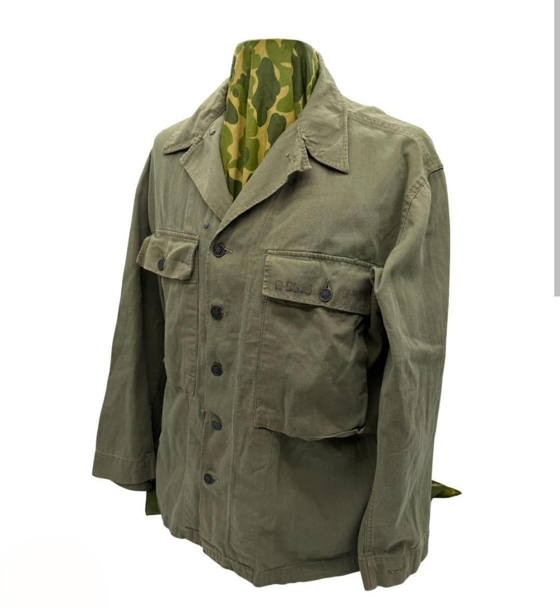
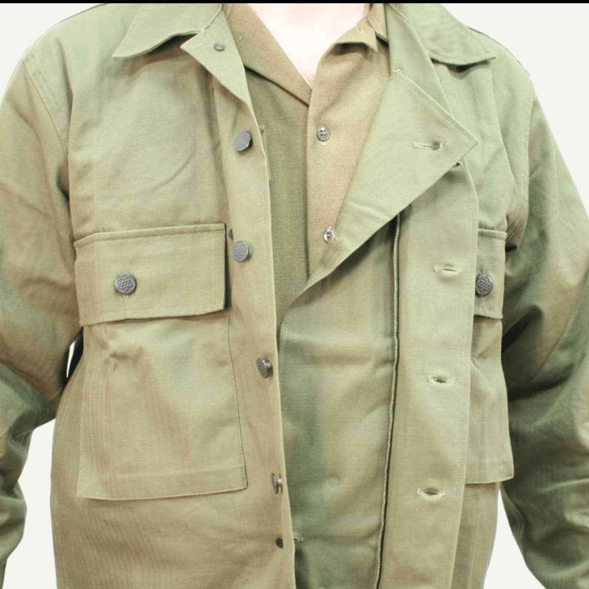

La veste US M-1943 est l’uniforme de combat standard adopté par l’US Army à partir de 1943. Conçue pour remplacer la M-1941 jugée trop légère, elle apporte une protection supérieure, une meilleure ergonomie et une modularité pensée pour les conditions difficiles du front.
Plus longue, plus robuste et mieux adaptée aux climats froids ou humides, la M-1943 devient rapidement l’uniforme emblématique de la fin de la Seconde Guerre mondiale, notamment en Europe lors de la campagne de Normandie, du front de l’Ouest et de l’avancée vers l’Allemagne.
La M-1943 introduit une conception entièrement revue : tissu plus épais, coupe plus longue, quatre grandes poches pratiques, capuche amovible et possibilité d’ajouter une doublure intérieure. Elle est pensée comme une veste polyvalente, adaptée à toutes les saisons grâce à son système de couches.
Elle est portée par l’infanterie, les unités aéroportées, les troupes blindées et les forces de soutien, devenant l’uniforme le plus répandu de l’US Army à partir de 1944.


Introduite en 1943, la M-1943 est distribuée massivement à partir de 1944. Elle devient l’uniforme principal des soldats américains en Europe, remplaçant progressivement la M-1941 jugée insuffisante pour les conditions hivernales.
Après la guerre, la M-1943 continue d’être utilisée durant les premières années de l’après-guerre et influence directement les uniformes américains de la guerre de Corée.